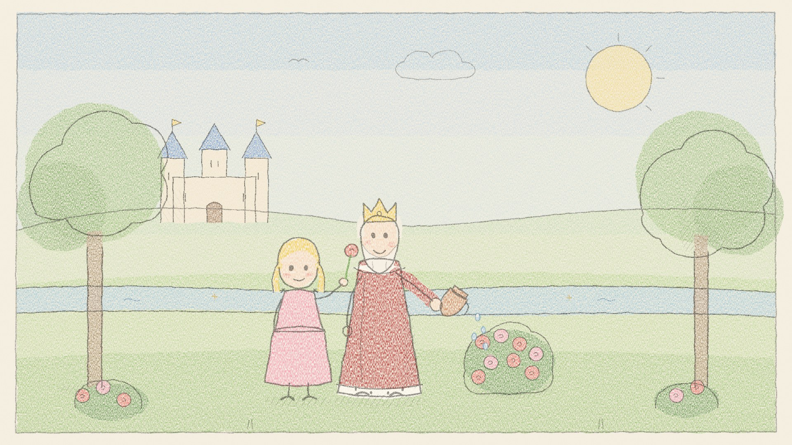

Vua Midas và Bàn Tay Vàng: truyện kể trước giờ ngủ cho bé, bản kể lại (theo Hawthorne)
Vua Midas, kể lại bằng lời của chúng tôi trước giờ đi ngủ, theo truyện "Bàn tay vàng" của Nathaniel Hawthorne. Có nhạc nhẹ giữa các cảnh. Trong tập này: - Ông vua mê vàng được toại nguyện: chạm vào gì cũng hóa vàng, kể cả cô con gái nhỏ Marygold. - Nước sông làm mọi thứ trở lại như cũ, và vua hiểu ra điều quý hơn vàng. Nguồn: The Golden Touch Nhạc: Kevin MacLeod (incompetech.com), CC BY 4.0 Những câu chuyện nhẹ nhàng cho giờ đi ngủ và giờ kể chuyện, được kể chậm rãi bằng một giọng đọc ấm áp. luongnv.com/podcast/stories
Nghe trên Once Upon a Time Show Tải MP3 Lời kể
Truyện này còn có bản: English, Français
Dựa theo THE GOLDEN TOUCH.
Lời kể
Người kể chuyện: Chào mừng các bạn đến với Once Upon a Time Show. Đến giờ nghe chuyện trước khi ngủ rồi. Chào con yêu. Con kéo chăn lên cho ấm nhé. Gối đã êm chưa con? Mình hít một hơi thật sâu, rồi thở ra thật chậm. Tối nay, con sẽ nghe chuyện về một ông vua tên là Midas, và cô con gái nhỏ của ông, tên là Marygold. Đây là một câu chuyện rất xưa, rất xưa. Ông vua ấy yêu vàng lắm. Nhưng rồi ông tìm ra một thứ còn quý hơn vàng nhiều. Con thử đoán xem, đó là thứ gì nhỉ? Con nằm thật yên nhé. Câu chuyện bắt đầu đây. Ngày xưa, có một ông vua rất giàu tên là Midas. Ông có một cô con gái nhỏ tên là Marygold. Cô bé hay chạy nhảy, cười vui quanh chân cha.
Vua Midas thích vàng hơn mọi thứ trên đời. Nhìn mây chiều vàng óng, ông ước đó là vàng thật. Khi Marygold hái tặng cha một bó hoa nhỏ màu vàng, ông chỉ lắc đầu.
Vua Midas: Ôi con ơi, giá mà những bông hoa này là vàng thật thì hay biết mấy.
Người kể chuyện: Ngày trước, vua Midas rất yêu hoa. Ông có một khu vườn đầy hoa hồng, bông nào cũng to, cũng đẹp, cũng thơm. Nhưng giờ đây, ông chỉ nghĩ: nếu mỗi cánh hoa là một lá vàng mỏng, thì khu vườn đáng giá bao nhiêu nhỉ? Mỗi ngày, vua xuống một căn phòng tối dưới lâu đài. Đó là nơi ông cất vàng. Chỉ có một tia nắng nhỏ chiếu qua khung cửa hẹp. Ông đếm từng đồng tiền vàng, rồi thì thầm một mình.
Vua Midas: Midas ơi, vua Midas giàu có ơi, ngươi thật là hạnh phúc.
Người kể chuyện: Một hôm, đang ngồi bên đống vàng, vua bỗng thấy một cái bóng. Ngẩng lên, ông thấy một chàng trai lạ đứng trong tia nắng. Chàng có khuôn mặt vui vẻ, và nụ cười sáng lấp lánh như ánh vàng. Cửa đã khóa kỹ, vậy mà chàng vẫn vào được. Vua hiểu ngay, đây không phải người thường. Chàng trai nhìn quanh căn phòng, rồi hỏi vua: có nhiều vàng thế này, vua đã thấy đủ chưa?
Vua Midas: Chưa đủ đâu. Ta ước mọi thứ ta chạm vào đều biến thành vàng.
Người kể chuyện: Chàng trai mỉm cười thật tươi. Chàng hỏi vua có chắc điều ấy sẽ làm vua vui không. Vua nói chắc chắn rồi. Thế là chàng vẫy tay chào, và bảo rằng sáng mai, lúc mặt trời mọc, vua sẽ có bàn tay vàng. Rồi chàng trai sáng rực lên, và biến mất. Đêm ấy, vua Midas nằm mãi không ngủ được. Ông cứ nghĩ đến những núi vàng, cao mãi, cao mãi. Ông chỉ mong trời mau sáng. Sáng hôm sau, trời vừa hửng sáng, vua Midas thức dậy. Ông chạm vào tấm chăn. Ồ, tấm chăn biến thành vàng óng ánh. Ông chạm vào cột giường, cột giường cũng thành vàng.
Vua Midas: Thật rồi. Bàn tay vàng là thật rồi.
Người kể chuyện: Vua vui lắm. Ông đeo kính lên mắt, thì kính cũng hóa vàng, và ông không nhìn qua được nữa. Ông hơi bối rối, nhưng rồi lại cười, và đi ra vườn. Trong vườn, hoa hồng nở đầy. Vua đi từ bụi này sang bụi kia, chạm vào từng bông. Bông nào cũng cứng lại, thành vàng. Lá vàng, cánh hoa vàng. Nhưng không còn mùi thơm nữa. Vua nghĩ thầm, hoa bằng vàng thế này mới quý. Ông quên mất rằng, cô bé Marygold rất thích ngửi hoa hồng. Rồi đến giờ ăn sáng. Vua ngồi vào bàn, chờ cô bé Marygold. Một lúc sau, cô bé bước vào, mắt đỏ hoe, khóc thút thít. Tay cô cầm một bông hồng bằng vàng. Cô bé kể, con ra vườn hái hoa tặng cha, mà bông nào cũng cứng đơ, không còn thơm nữa. Vua Midas thấy ngượng lắm. Ông không dám nói đó là do mình.
Vua cầm cốc lên định uống. Nhưng nước vừa chạm môi đã hóa vàng. Ông cầm miếng bánh, bánh cũng hóa vàng. Con cá trên đĩa cũng thành con cá vàng, cứng và lạnh. Vua đói lắm, mà không ăn được gì cả.
Vua Midas: Ôi, ta giàu thế này, mà không ăn nổi một miếng bánh.
Người kể chuyện: Marygold thấy cha buồn. Cô bé thương cha lắm. Cô chạy lại, dang tay ôm lấy cha. Vua cúi xuống, hôn lên tóc con. Và rồi, con biết không, cô bé đứng yên. Marygold đã hóa thành một bức tượng vàng nhỏ. Đừng lo nhé con, câu chuyện này kết thúc rất đẹp. Vua Midas ôm mặt. Lúc ấy, ông mới hiểu ra. Một trái tim ấm áp biết thương ông, quý hơn tất cả vàng trên trời dưới đất. Đúng lúc đó, chàng trai lạ lại hiện ra ở cửa, vẫn với nụ cười sáng. Chàng hỏi vua: bàn tay vàng có làm vua vui không? Vua lắc đầu.
Vua Midas: Vàng không phải là tất cả. Ta đã mất điều ta quý nhất.
Người kể chuyện: Chàng trai hỏi tiếp. Một cốc nước mát, hay bàn tay vàng, cái nào quý hơn? Một mẩu bánh mì, hay bàn tay vàng? Và cô bé Marygold ấm áp, hay bàn tay vàng?
Vua Midas: Cốc nước, mẩu bánh, và con gái ta. Những thứ ấy quý hơn cả thế giới bằng vàng.
Người kể chuyện: Chàng trai gật đầu, và nói vua đã khôn hơn hôm qua. Rồi chàng bảo: hãy nhảy xuống dòng sông cuối vườn, và mang về một bình nước sông. Nước ấy rảy lên vật gì, vật ấy sẽ trở lại như cũ. Vua Midas ôm một cái bình, chạy thật nhanh ra sông. Ông nhảy ùm xuống nước, chẳng kịp cởi giày. Khi ngoi lên, ông thấy lòng nhẹ hẳn, như vừa bỏ được một hòn đá nặng. Ông múc đầy bình nước. Cái bình bằng vàng lại trở thành bình đất như cũ. Ông chạm vào một bông hoa tím bên bờ sông. Bông hoa vẫn mềm, vẫn tím. Bàn tay vàng đã đi mất rồi. Vua chạy về lâu đài, rảy nước lên Marygold. Má cô bé hồng trở lại. Cô hắt xì một cái, rồi ngạc nhiên vì thấy mình ướt sũng.
Cô bé kêu lên: cha ơi, đừng tưới nữa, áo đẹp của con ướt hết rồi. Cô không nhớ gì cả. Cô chỉ nhớ lúc mình chạy lại ôm cha thôi. Rồi vua dắt Marygold ra vườn. Ông rảy nước lên những bụi hồng, và hơn năm nghìn bông hồng lại nở, mềm mại và thơm ngát. Từ đó, chỉ còn hai điều nhắc vua nhớ về bàn tay vàng. Cát dưới lòng sông lấp lánh như vàng. Và mái tóc Marygold có một ánh vàng nhẹ, rất đẹp.
Vua Midas: Từ sáng hôm ấy, ta chỉ thích một thứ vàng thôi. Đó là ánh vàng trên tóc con.
Người kể chuyện: Bây giờ, mặt trời đã lặn sau khu vườn. Những bông hồng khép cánh lại. Dòng sông chảy thật khẽ, thật êm. Cát dưới lòng sông lấp lánh khe khẽ, như những ngôi sao nhỏ đang ngủ. Vua Midas không xuống căn phòng tối nữa. Ông ngồi bên giường Marygold, vuốt mái tóc ánh vàng của con, và kể cho con nghe về những bông hoa.
Vua Midas: Ngủ ngon nhé, con gái của cha. Con quý hơn tất cả vàng trên đời.
Người kể chuyện: Marygold mỉm cười, nhắm mắt lại. Hơi thở của cô bé chậm dần, chậm dần. Con cũng vậy nhé. Con không cần vàng đâu. Con có chăn ấm, có gối êm, và có người thương con thật nhiều. Nhắm mắt lại nào. Hít vào thật chậm, thở ra thật chậm. À ơi, à ơi. Once Upon a Time Show chúc bé ngủ ngon và có những giấc mơ thật đẹp.